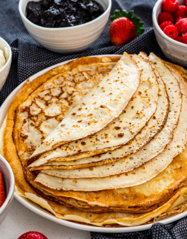

Ẩm Thực Đường Phố Châu Âu
Ẩm thực đường phố Châu Âu mang đậm tính tiện lợi và đa dạng, phản ánh sự giao thoa văn hóa giữa các quốc gia. Từ món bánh mì kẹp đậm chất Đức, bánh crêpe ngọt ngào của Pháp, đến pizza lát tiện lợi của Ý, hãy cùng khám phá các món ăn nhanh nổi tiếng của Lục Địa Già.
🌟 Những Ngôi Sao Đường Phố

Döner Kebab (Đức)
Thịt nướng tảng được xắt mỏng kẹp trong bánh mì pita cùng salad và sốt yoghurt. Rất phổ biến tại Berlin.
🇩🇪 Đức

Crêpe (Pháp)
Lớp bánh mỏng nhẹ, có thể dùng nhân mặn (thịt, phô mai) hoặc nhân ngọt (Nutella, chuối).
🇫🇷 Pháp
Fish and Chips (Anh)
Cá chiên giòn tan kèm khoai tây chiên, rưới chút dấm mạch nha, là linh hồn ẩm thực Anh.
🇬🇧 Anh